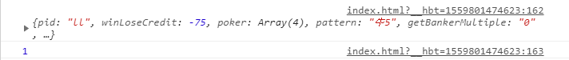
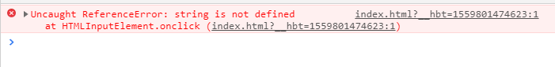
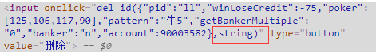
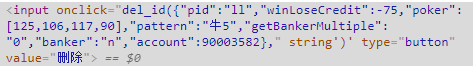
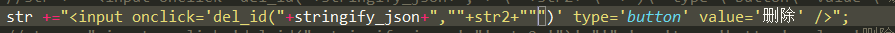
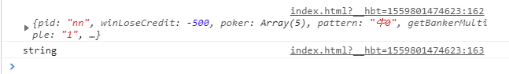

在程序中经常会写到字符串的拼接，最常见的一中方式就是把拼接的字符串返回到页面上，然后让浏览器渲染成html代码。
现在es6已经用的不少了，但是因为一些原因，有的项目只能用最原始的加号“+”拼接，所以就会出现一种情况；请看下面的代码：
1 var stringify_json = JSON.stringify(rowObject);
2 var str2 = 1;1 str +="<input onclick='del_id("+stringify_json+","+str2+")' type='button' value='删除' />";
2 function del_id(a,b){
3 console.log(a);
4 console.log(b);
5 }
上面是代码的生命，这个时候是没有问题的，你把str直接返回到页面，页面是可以正常的解析的，点击这个按钮也是能打印的；下面是打印的结果

打印的结构是没有任何问题的。但是当我们把str2换成字符串的时候，就发现页面开始报错了。
也就是上面的代码改成str2 = "string"的时候，页面开始报错了；下面是错误的信息，和页面的渲染结果；


发现这个并不是按照字符串拼接上去的， 所以js认为这个是方法，所以就出现上上面的错误了。
所以我们在拼接的时候，就需要给这个string两边加上引号，所以就有了下面的代码：
1 str +="<input onclick='del_id("+stringify_json+",'"+str2+"')' type='button' value='删除' />";然后再页面上的渲染就是这样的了。

也就是说，html解析器在解析到string前面的引号的时候，就认为这一段就完成，所以页面也就直接报错了，也就是说，咱们需要把拼接上的单引号，变成双引号；
下面的截图是我的编辑器的，我直接把上面代码中的单引号改成双引号的。

编辑器直接把str2不当成一个变量了。这个肯定是不行的了，所以这个时候就需要用上咱们的转移字符 "\" 了；
1 str +="<input onclick='del_id("+stringify_json+",\""+str2+"\""+")' type='button' value='删除' />";这个是加上转移字符之后的，也就是说，\后面的引号，不当成是咱们拼接的东西，而是就是简单的表示自己是个引号。这样的话，我们就可以正常的打印了。

----------------华丽的分割线-----------------------------
现在已经有很多项目是用es6细的了，es6有更优美的拼接字符串的方式；请参见下面的链接
https://www.cnblogs.com/newze/p/7535470.html
这篇文章写的不错。大家可以自行查阅；